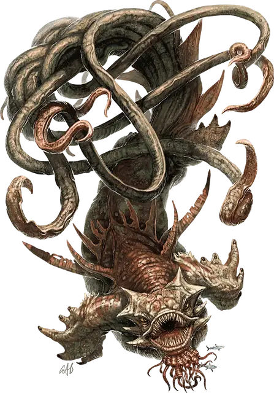

Кракен
Kraken
Громадный Монстр (Титан), хаотично-злой

Класс Доспеха 18 (природный доспех)
Хиты 472 (27к20 + 189)
Скорость 20 футов, плавая 60 футов
| мод | спас | ||
|---|---|---|---|
| СИЛ | 30 | +10 | +17 |
| ЛОВ | 11 | +0 | +7 |
| ТЕЛ | 25 | +7 | +14 |
| мод | спас | ||
|---|---|---|---|
| ИНТ | 22 | +6 | +13 |
| МДР | 18 | +4 | +11 |
| ХАР | 20 | +5 | +5 |
Иммунитет к урону электричество; дробящий, колющий, рубящий от немагических атак
Иммунитет к состояниям паралич, испуг
Чувства истинное зрение 120 футов, пассивное Восприятие 14
Языки понимает язык Бездны, Инфернальный, Небесный и Первичный, но не говорит, Телепатия 120 фт.
Опасность 23 (50000 опыта)
Бонус мастерства +7
Среда обитания Под водой
Особенности
Амфибия. Кракен может дышать и воздухом и под водой.
Свобода перемещений. Кракен игнорирует труднопроходимую местность, и магические эффекты не могут ни уменьшить его скорость, ни сделать опутанным. Он может потратить 5 футов перемещения, чтобы избавиться от немагического опутывания или перестать быть схваченным.
Осадное чудовище. Кракен причиняет двойной урон предметам и строениям.
Действия
Мультиатака. Кракен совершает три атаки щупальцем, каждую из которых можно заменить Броском.
Укус. Рукопашная атака оружием: +17 к попаданию, досягаемость 5 футов, одна цель. Попадание: Колющий урон 23 (3к8 + 10). Если цель — существо с размером не больше Большого, схваченное кракеном, это существо проглатывается, и захват оканчивается. Будучи проглоченным, существо является слепым и опутанным, обладает полным укрытием от атак и прочих эффектов, исходящих снаружи, и получает урон кислотой 42 (12к6) в начале каждого хода кракена.
Если кракен получает в течение одного хода от находящегося внутри него существа урон 50 или больше, он должен в конце этого хода преуспеть в спасброске Телосложения Сл 25, иначе изрыгнет всех проглоченных существ, которые падают ничком в пространстве в пределах 10 футов от кракена. Если кракен умирает, проглоченное существо перестает быть опутанным им, и может высвободиться из трупа, используя 15 футов перемещения, и на выходе падает ничком.
Щупальце. Рукопашная атака оружием: +17 к попаданию, досягаемость 30 футов, одна цель. Попадание: Дробящий урон 20 (3к6 + 10), и цель становится схваченной (Сл высвобождения 18). Пока цель схвачена, она опутана. У кракена десять щупалец, и каждое может держать в захвате одну цель.
Бросок. Один несомый предмет с размером не больше Большого, или существо, схваченное кракеном, бросается на расстояние до 60 футов в случайном направлении, после чего падает ничком. Если брошенная цель попадает в твердую поверхность, цель получает дробящий урон 3 (1к6) за каждые 10 футов броска. Если цель была брошена в другое существо, это существо должно преуспеть в спасброске Ловкости Сл 18, иначе получит такой же урон и будут сбито с ног.
Буря с грозой. Кракен магическим образом создает три разряда молнии, каждый из которых может ударить цель, видимую в пределах 120 футов от кракена. Цель должна совершить спасбросок Ловкости Сл 23, получая урон электричеством 22 (4к10) при провале, или половину этого урона при успехе.
Легендарные действия
Кракен может совершить 3 легендарных действия, выбирая из представленных ниже вариантов. За один раз можно использовать только одно легендарное действие, и только в конце хода другого существа. Кракен восстанавливает использованные легендарные действия в начале своего хода.
Атака щупальцем или бросок. Кракен совершает одну атаку щупальцем или использует Бросок.
Буря с грозой (стоит 2 действия). Кракен использует Бурю с грозой.
Облако чернил (стоит 3 действия). Находясь под водой, кракен выпускает облако чернил с радиусом 60 футов. Облако огибает углы, и его местность является сильно заслонённой для всех кроме самого кракена. Все существа кроме кракена, оканчивающие там ход, должны преуспеть в спасброске Телосложения Сл 23, получая урон ядом 16 (3к10) при провале, или половину этого урона при успехе. Сильное течение рассеивает облако, которое в противном случае все равно исчезает в конце следующего хода кракена.
Логово
Кракен живет в темных глубинах, как правило, в подводном разломе или пещере, заполненной мусором, сокровищами и обломками кораблей.
Действия логова
При значении инициативы «20» (в случае ничьей проигрывает всем конкурентам) кракен совершает действие логова, чтобы вызвать один из следующих магических эффектов:
• По логову кракена проносится сильное течение. Все существа в пределах 60 футов от кракена должны преуспеть в спасброске Силы Сл 23, иначе их оттолкнет на 60 футов от кракена. При успехе существа толкаются на 10 футов от кракена.
• Существа, находящиеся в воде в пределах 60 футов от кракена, получают уязвимость к урону электричеством до значения инициативы «20» следующего раунда.
• Вода в логове становится заряженной электричеством. Все существа в пределах 120 футов от кракена должны преуспеть в спасброске Телосложения Сл 23, получая урон электричеством 10 (3к6) при провале, или половину этого урона при успехе.
Местные эффекты
Регион, содержащий логово кракена, осквернен присутствием не угодных богам созданий, создающих следующие магические эффекты:
• Кракен может изменить погоду по своему желанию в радиусе 6 миль с центром на логове. Эффект идентичен заклинанию власть над погодой.
• Водяные элементали заводятся в пределах 6 миль от логова. Эти элементали не могут покинуть воду, и значения их Интеллекта и Харизмы равны 1 (−5).
• Водные существа с Интеллектом 2 и выше в пределах 6 миль от логова становятся очарованы кракеном и агрессивно настроены к чужакам в этой области.
Когда кракен умирает, все эти местные эффекты немедленно исчезают.
Описание
ВО СНЕ КРАКЕН МЕЧТАЕТ ДОТЯНУТЬСЯ ЩУПАЛЬЦАМИ ДО НЕБЕС И ЗАДУШИТЬ ВСЕ, ЧТО БЫЛО РОЖДЕНО НА НИХ, И КОГДА ЕГО ЩУПАЛЬЦА ДЕЙСТВИТЕЛЬНО ЧЕГО-ТО КАСАЮТСЯ, ОН ТОПИТ ПРОПЛЫВАЮЩИЕ НАД НИМ СУДА».
— ИЗ КНИГИ «НОЧЬ КУЛЬТА КРАКЕНА», НАПИСАННОЙ МЭЛФЕОРОМ СЕРРЭНГОМ, ПИРАТСКИМ ВОЛШЕБНИКОМ ИЗ ТЕТИРА
Под волнами кракен спит неисчислимые века в ожидании какого-нибудь дурного знака или зова. Сухопутные смертные, которые плавают в открытом море, стали забывать причины, по которым их предки страшились океана, да и расы глубин игнорируют странные провалы в своих историях, когда их цивилизации практически исчезали после появления ужасных щупалец.
Левиафаны из легенд. В начале времен кракены служили жестокими воителями богов. Когда войны богов закончились, кракены возжелали свободы, чтобы никогда больше не служить другим существам.
Держа в страхе целые народы, кракен появляется из своих темных владений, и даже посреди океана штормы возникают или утихают по его воле. Кракен олицетворяет первобытную силу, которая стирает величайшие достижения цивилизации, словно они были песочными замками. Эти разрушительные атаки могут уничтожить судоходную торговлю и остановить связь между прибрежными городами.
Зловещая темнота предвещает нападение кракена, и облако чернильного яда окрашивает воду вокруг. Галеоны и военные корабли пропадают, когда его щупальца возникают из глубин. Кракен ломает их мачты как щепки, после чего тащит вглубь корабли и экипаж.
Даже не имеющие выходу к морю города не защищены от гнева кракена. Кракены могут дышать воздухом так же легко как и водой, и некоторые из них пробираются вверх по рекам, обосновываясь в пресноводных озерах, уничтожая целые города на своем пути. Искатели приключений рассказывают, что эти чудовища гнездятся в руинах прибрежных цитаделей, обвивая щупальцами падающие башни, распадающиеся на камни.
Смертоносные противники. Некоторые кракены практически равны богам, со своими культами и приспешниками, разбросанными как по морю, так и по суше. Другие же являются союзниками Олидры, злой Княгини Стихийной Воды, и используют её культистов для воплощения своей воли, как на суше, так и на море. Кракены, довольные своими последователями, могут успокоить бушующие моря и послать им щедрый улов. Однако древний и коварный ум кракена жаждет расплаты, и в конечном итоге стремится разрушить все вокруг себя.